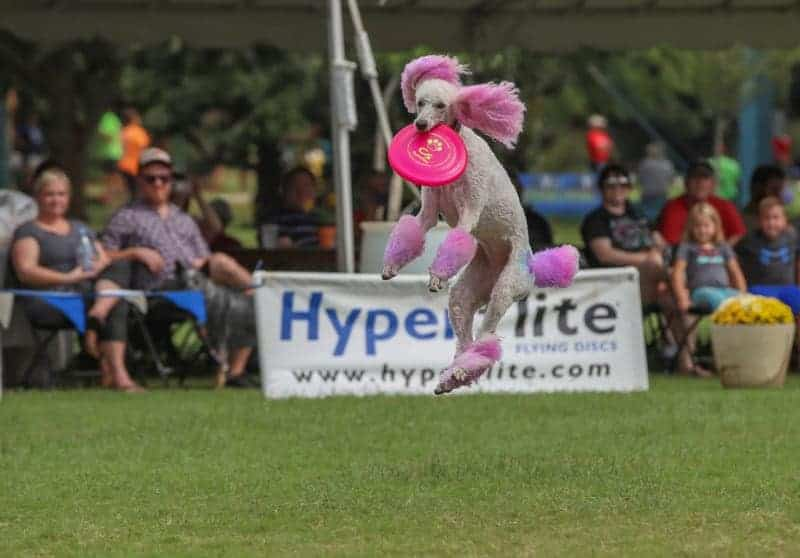
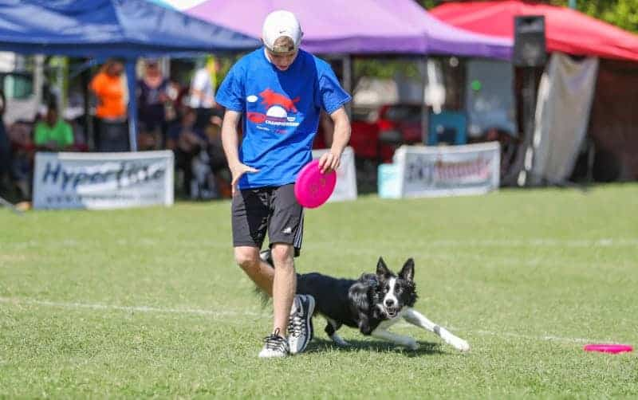
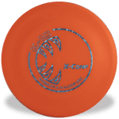

반려견의 마음에
먼저 귀 기울입니다.
신나게 달리는 순간에도, 잠시 숨을 고르는 순간에도.
반려견의 속도에 맞추고, 작은 몸짓에 귀 기울입니다.
반려견이 편안하고 즐거울 때,
우리의 플레이도 오래 이어질 수 있다고 믿습니다.

처음 고르는 원반부터 나만의 플레이 스타일을 위한 선택까지.

대회 안내와 종목별 규칙
대회 살펴보기한국어로 배우는 디스크독
교육 자료 보기원반을 따라 달려오는 발걸음,
다시 던져주기를 기다리는 눈빛.
스카이하운즈는 함께 보내는 그 시간에 담긴
행복과 기쁨을 소중히 여깁니다.
신나게 달리는 순간에도, 잠시 숨을 고르는 순간에도.
반려견의 속도에 맞추고, 작은 몸짓에 귀 기울입니다.
반려견이 편안하고 즐거울 때,
우리의 플레이도 오래 이어질 수 있다고 믿습니다.
한 번의 캐치에 함께 웃고,
서로의 도전에 응원을 보냅니다.
반려견과 나누는 교감, 사람 사이에 쌓이는 우정.
함께 뛰고 웃는 시간이 우리를 이어줍니다.
다양한 견종뿐만 아니라 믹스견도,
사람도 나이 불문 누구나 함께할 수 있습니다.
처음 원반을 쥔 손도, 익숙하게 필드를 달리는 발걸음도 반갑습니다.
서로 다른 모습과 속도를 존중하며, 함께 웃을 자리를 넓혀갑니다.
우리 강아지와 함께할 Hyperflite 원반을 골라보세요.
국내 판매 준비 중입니다. 판매가와 입고 일정은 오픈 시 안내합니다.
Hyperflite 오버뷰 · 크기와 소재부터 전체 라인업까지.
시리즈는 원반의 크기를, 소재는 촉감과 내구성을 정합니다. 반려견의 입 크기와 무는 습관에 맞춰 선택해 보세요.
4인치 Nano부터 10인치 Alpha까지, 8개 시리즈를 살펴보세요.
가장 작은 두 가지 크기
작은 입에 맞는 크기
경기에서 사용하는 기본 크기
약 27 kg 이상을 위한 Alpha
같은 크기라도 소재에 따라 단단함, 내구성, 물에 뜨는 성질이 달라집니다.

관통 저항성과 내구성을 중시하는 놀이·경기용 소재.

더 단단한 촉감과 장거리 던지기를 위한 소재.

잘 휘어지는 소재. 퍼피와 민감한 입을 고려한 선택.

탄탄한 기본 경기용 소재. K-10·Pup은 야광 색상도 제공.

퍼피·노령견과 부드러운 촉감을 선호하는 반려견을 위한 소재.

추운 날의 놀이를 위한 부드러운 소재.
내구성은 Jawz를 100%로 둔 제조사의 상대 지표입니다. 손상되지 않는다는 의미는 아니며 반려견마다 사용 결과가 다릅니다.
시리즈와 소재의 조합을 사진으로 확인하세요. 원반 사진을 누르면 해당 SHOP 분류로 이동합니다.
| 시리즈 | Competition Standard | FrostBite | HyperFlex | Jawz | SofFlite | X-Comp |
|---|
좁은 화면에서는 표를 좌우로 밀어 확인하세요.
개별 제품 사진은 실제 크기 비율이 아닙니다.
Peter Bloeme와 Jeff Perry가 설립한 Hyperflite는 반려견 전용 원반을 개발합니다.
힘이 집중되는 부분을 보강하고, 위아래의 낮은 그립으로 흙과 모래가 끼는 것을 줄였습니다.
미국 조지아에서 식품용 플라스틱과 염료로 생산합니다.
모든 원반의 미세한 무광 표면이 햇빛을 분산해 반사광을 줄입니다.
| 시리즈 | 소재 | 지름 | 무게 | 색상 |
|---|
조건에 맞는 제품이 없습니다.
좁은 화면에서는 표를 좌우로 밀어 확인하세요.
지름과 무게는 근삿값입니다. 색상은 미국 공식 라인업 기준이며 국내 판매 구성과 가격은 SHOP에서 안내합니다.
제품을 선택하고 크기·무게·소재의 차이를 확인하세요.
출처: Hyperflite Discs Overview 새 창 · 2026.11.02 확인
공식 오버뷰의 핵심 내용을 한국어로 요약하고 규격을 정리했습니다.
사진을 눌러 비교할 원반을 선택하고, 크기와 소재의 차이를 확인해 보세요.
현재 상세 정보가 등록된 4개 제품을 비교할 수 있습니다. 지름과 무게는 제조사 비교표의 근삿값입니다.
사람이 던지고, 반려견이 잡으며 한 팀이 되어 도전하는 디스크독.
Skyhoundz는 정확도, 프리스타일, 장거리 캐치를 세 가지 대회 시리즈로 펼칩니다.
Disc Dogs Rock! · 2026 한국어판 · PDF
한국어판 번역 검수·편집: Alex Lee
시리즈는 대회의 종류, 종목은 겨루는 경기 방식입니다.
종목에 마우스를 올리면 설명이 펼쳐지고, 클릭하면 열린 상태를 유지합니다.종목을 터치하면 간단한 경기 설명이 펼쳐집니다. 다시 터치하면 닫힙니다.
정확도·속도·팀워크를 겨루는
5개 종목
중앙 원에서 여러 방향으로 던져 득점하는 경기입니다. 60초 동안 캐치한 위치와 점프 여부에 따라 점수를 쌓습니다.
다양한 던지기와 캐치를 하나의 루틴으로 보여줍니다. 최대 90초 동안 펼친 연기의 구성, 운동 능력, 난도와 성공도를 평가합니다.
두 사람이 한 마리의 반려견에게 번갈아 던집니다. 60초 동안 거리별 득점 구역에서 캐치한 점수를 합산합니다.
정해진 득점 구역에 착지하도록 던지는 정확도 경기입니다. 60초 동안 낮은 점수 구역부터 한 번씩 시도한 뒤 원하는 구역을 공략합니다.
20야드(약 18.3m) 너머의 캐치를 두 번 성공시키고 출발선으로 돌아오는 시간을 겨룹니다. 제한 시간은 60초입니다.
일반 부문과 소형견을 위한 MicroDog 부문으로 운영됩니다.
루틴과 캐치 실력을 펼치는
프리스타일 + 거리·정확도
다양한 던지기와 캐치를 하나의 루틴으로 보여줍니다. 최대 90초 동안 펼친 연기의 구성, 운동 능력, 난도와 성공도를 평가합니다.
한 사람이 원반 한 장을 던지고 반려견이 되가져오며 점수를 쌓습니다. 60초 동안 더 먼 득점 구역에서 캐치할수록 높은 점수를 얻습니다.
두 사람과 한 마리의 반려견이 함께 루틴을 펼칩니다. 일반 프리스타일 평가에 두 사람의 협업과 동선 등 팀워크 평가가 더해집니다.
Open · 오픈 프리스타일 + 거리·정확도 합산
Sport · 스포츠 거리·정확도 단독 경기
MicroDog·Youth 등 참가 부문도 운영됩니다.
가장 먼 거리의 캐치에 도전하는
장거리 경기 1개 종목
90초 동안 장거리 캐치에 도전합니다. 성공한 캐치 중 가장 먼 거리로 순위를 정하며, 던진 거리만으로는 기록되지 않습니다.
실제 개설 종목과 참가 부문은 대회마다 달라질 수 있습니다. 참가하려는 대회의 공지를 함께 확인하세요.
경기 시간과 진행 방식, 점수를 얻는 기준을 정리했습니다. 참가 전에는 한국어 가이드와 해당 대회의 공지를 함께 확인하세요.
디스크 도가손
디스크 도가손 · 클래식
디스크 도가손
디스크 도가손
디스크 도가손
클래식
클래식
익스트림 디스턴스
Skyhoundz 공식 시리즈 안내영어, 새 창및 종목별 공식 규칙, 2026 한국어 가이드PDF, 새 창를 바탕으로 정리했습니다. 세부 규칙은 해당 대회의 최신 안내를 확인해 주세요.
한국 팀과 선수의 플레이를 기록합니다.
확인된 대회 결과와 한국 팀의 기록을 이곳에서 전할 예정입니다.
함께하는 즐거움을 더 오래, 더 깊게.
한국어로 이용할 수 있는 교육 자료를 모았습니다.
한국어 버전으로 이용할 수 있는 콘텐츠를 소개합니다.
디스크독의 즐거움을 전하는 시범팀 소개를 준비하고 있습니다.
원반 하나로 이어지는 사람과 반려견.
함께 플레이할 디스크독 클럽을 만나보세요.
활동 지역과 팀의 이야기를 살펴보세요.
화면 확인용 테스트 목록입니다. 팀 이름과 활동 지역은 예시입니다.
같은 취미가 모이면,
더 넓은 필드가 됩니다.
 Pup
Pup MaxQ
MaxQ Z-Disc
Z-Disc